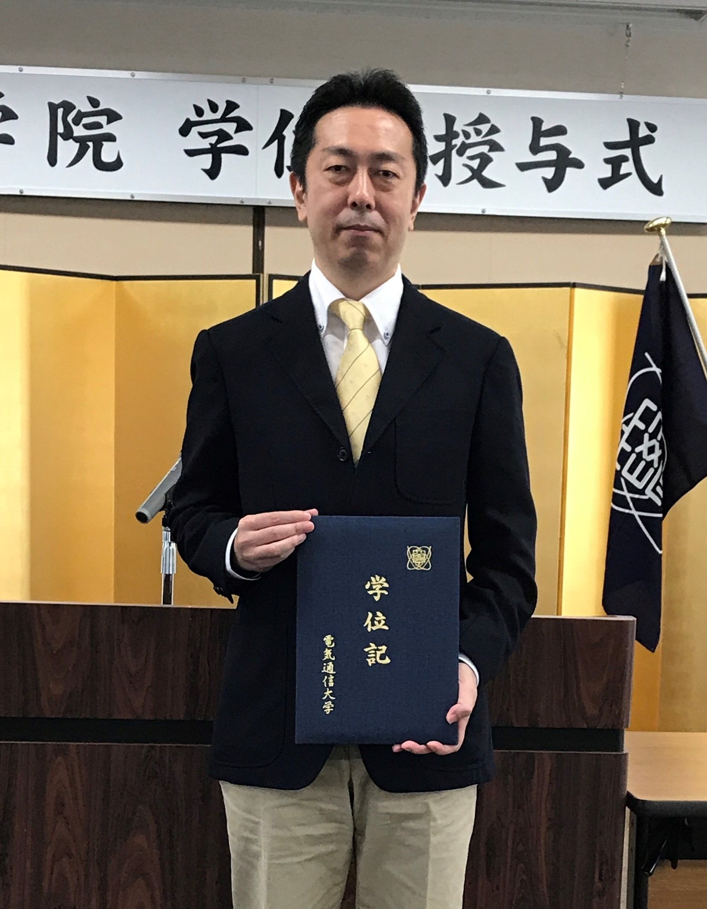

より高いレベルへのステップアップとして，大学院に進学し，博士号を取得することを検討しているトップエスイー受講生は決して少なくはありません．そこで，トップエスイーでは，大学院と連携して，トップエスイー修了後に大学院へ進学する場合のオプションを用意しています．例えば，トップエスイーで追求したテーマを発展させて，論文の投稿までの指導を行ったり，大学院への進学後にも引き続いて指導を継続させるなど，トップエスイーの取り組みを発展させて博士過程に進むことをできるようにしています．
現在，トップエスイーは，電気通信大学大学院と協力関係にあります．
電気通信大学では，トップエスイーの受講生・修了生で博士後期課程への進学を希望する方を対象とした人材養成コースを，NIIと共同で2012年に設立しました（当時大学院情報システム学研究科，現情報理工学研究科）．このコースの学生は研究科の博士後期課程に入学し，トップエスイーで手がけた研究テーマ（修了制作）を基に博士の研究を進め，学位を取得することができます．このコースにおいては通常の学術研究に限らず，実践を重視した研究によって学位を取得することもできます．
2021年1月現在，トップエスイー修了生から9名が連携の制度を利用して博士号を取得できました．以下の写真は，2018年度に本制度を利用して電気通信大学において博士号を取得したトップエスイー2期生の天野和洋さんです．
